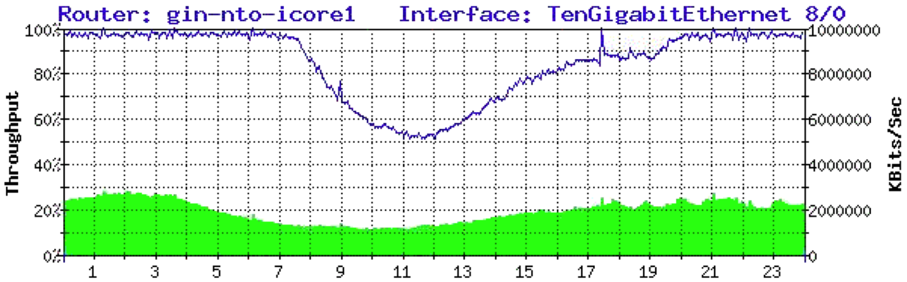
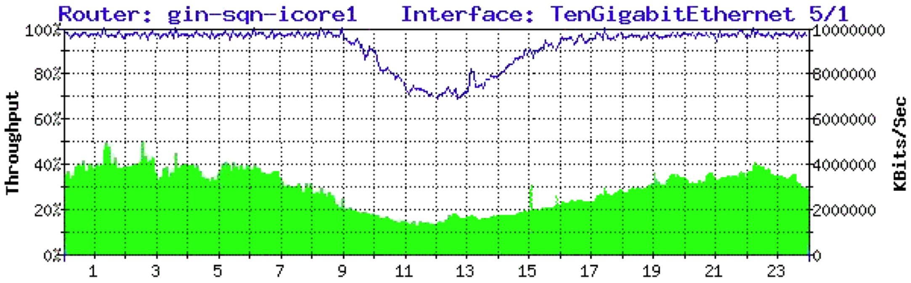
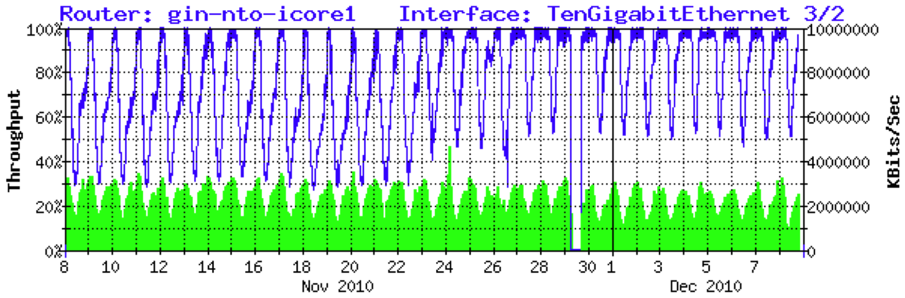

Tactic 27. Congest Transit Pipes
In this tactic the ISP makes peering appear more attractive than the transit alternative.
To illustrate, consider an anonymous claim posted to the NANOG mailing list in 2010.
Note: The following material is copied from the posting at: http://mailman.nanog.org/pipermail/nanog/2010-December/029251.html
The posting reads as follows:
Ever wonder what Comcast’s connections to the Internet look like? In the tradition of WikiLeaks, someone stumbled upon these graphs of their TATA links. For reference, TATA is the only other IP transit provider to Comcast after Level (3). Comcast is a customer of TATA and pays them to provide them with access to the Internet.
1 day graphs:

Notice how those graphs flat-line at the top? That’s because they’re completely full for most of the day. If you were a Comcast customer attempting to stream Netflix via this connection, the movie would be completely unwatchable. This is how Comcast operates: They intentionally run their IP transit links so full that Content Providers have no other choice but to pay them (Comcast) for access. If you don’t pay Comcast, your bits wont make it to their destination. Though they wont openly say that to anyone, the content providers who attempt to push bits towards their customers know it. Comcast customers however have no idea that they’re being held hostage in order to extort money from content.
Another thing to notice is the ratio of inbound versus outbound. Since Comcast is primarily a broadband access network provider, they’re going to have millions of eyeballs (users) downloading content. Comcast claims that a good network maintains a 1:1 with them, but that’s simply not possible unless you had Comcast and another broadband access network talking to each other. In the attached graphs you can see the ratio is more along the lines of 5:1, which Comcast was complaining about with Level (3). The reality is that the ratio argument is bogus. Broadband access networks are naturally pull-heavy and it’s being used as an excuse to call foul of Level (3) and other content heavy networks. But this shouldn’t surprise anyone, the ratio argument has been used for over a decade by many of the large telephone companies as an excuse to deny peering requests. Guess where most of Comcasts senior network executive people came from? Sprint and AT&T. Welcome to the new monopoly of the 21st century.
If you think the above graph is just a bad day or maybe a one off? Let us look at a 30 day graph...

Comcast needs to be truthful with its customers, regulators and the public in general. The Level (3) incident only highlights the fact that Comcast is pinching content and backbone providers to force them to pay for uncongested access to Comcast customers. Otherwise, there’s no way to send traffic to Comcast customers via the other paths on the Internet without hitting congested links.
Remember that this is not TATA’s fault, Comcast is a CUSTOMER of TATA. TATA cannot force Comcast to upgrade its links, Comcast elects to simply not purchase enough capacity and lets them run full. When Comcast demanded that Level (3) pay them, the only choice Level (3) had was to give in or have its traffic (such as Netflix) routed via the congested TATA links. If Level (3) didn’t agree to pay, that means Netflix and large portions of the Internet to browse would be simply unusable for the majority of the day for Comcast subscribers.
Love,
Backdoor Santa
These types of anonymous public disclosures are somewhat common in this community, and, therefore, should be taken with some skepticism. However, it does demonstrate a maneuver that is discussed periodically in the industry – congesting links to achieve an end.
Similarly, back in the early NSFNET transition days, a Tier 1 ISP’s peering link into MAE-East was purposely kept congested. Requests for upgrading that circuit were met with sales responses like “ ...to get good access to our customers, you should purchase our transit product...”
This tactic is well-known. Congesting a link to achieve specific business goals has proven to be an effective tactic and has led to peering, Paid Peering, or transit sales.